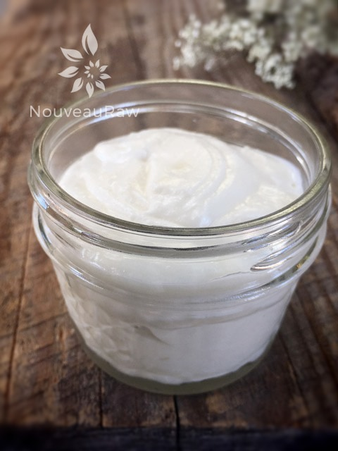

Sweet Almond and Orange Body Butter

What I love about body butter is how they smooth you down and butter you up for the softest, silkiest skin imaginable. Indulge your senses with a luxurious orange and sweet almond aroma. Although the texture of this body butter is light and fluffy, when rubbing it into the skin, it does have a bit of an oily feel.
Mango Butter
Cold-pressed Mango Butter is crushed from the mango kernel, leaving the natural healing properties intact. Did you know that the seed has just as many benefits as the flesh? Due to the high concentration of antioxidants, it works as an awesome moisturizer.
It is also rich in vitamins A and C. Between the two of them; they encourage the production of collagen, which helps give skin its shape and strength. They also stimulate the cells responsible for keeping skin firm, reducing fine lines and wrinkles, and increasing an overall youthful look. I’d say these are some pretty good reasons to use mango butter.
Shea Butter
Shea butter is also known as “Vitamin A Cream,” which is a pretty powerful vitamin for the skin. It also aids in the skin’s natural collagen production and helps to protect, as well as nourish the skin to prevent drying. It’s great to help with bug bites, skin allergies, and even frostbite. (source)
Coconut Oil
Coconut oil is rich in protein, which helps keep the skin healthy and rejuvenated, both internally and externally. These proteins also contribute to cellular health and tissue repair. Coconut oil contains Vitamin E, which soothes eczema, sunburn, and psoriasis, and its antiviral and antifungal benefits even help to treat bug bites.
Sweet Almond Oil
Personally, if it were at all possible, I would sit in a bathtub filled with Almond Oil. I LOVE the smell! That was one of the big reasons I used it in this body butter, but there are other reasons as well. Important reasons. :) Almond oil has a high level of fatty acids, which serve as a natural emollient for the skin and can help the skin lock in moisture by forming a protective barrier. It also restores the normal PH of the skin, giving you that healthy glow. If you are allergic to almonds, you might want to skip this recipe. Remember that what we put on our skin goes into our bodies. So, it would be best to stay on the safe side of things.
Orange Essential Oil
I chose to add orange essential oil for that pleasant aroma, which gives a sense of peace, harmony, and creativity. As far as benefits to my skin, it is another collagen helper p as well as increasing the blood flow to the skin.
Look for the words “unrefined,” “cold-pressed,” or “crude,” which means that the product was extracted with natural methods that don’t overheat the ingredient during the process, thus destroying some of its nutrients. I hope you enjoy this body butter, please comment below. Blessings, amie sue
Melting in a double boiler:
- Simmer a few inches of water in a saucepan and stack a stainless steel bowl on top of a saucepan, making sure the bowl fits snugly. The water in the bottom pan shouldn’t be touching the top bowl.
- Combine the mango butter, shea butter, coconut oil, and almond oil in the top bowl.
- Gently melt and stir until the mixture is liquid.
Melting in the dehydrator: (this is what I do)
- You will need a dehydrator that has a large cavity such as an Excalibur. A stacking tray dehydrator won’t work.
- Place the containers of the oils in the dehydrator and warm it to liquid.
- I find this method much easier as I don’t have to scoop out hard butters/oils from their jars… I melt it all, use what is needed, return the lid and let it set back up until I have another wild hair to make some body butter.
Whipping the body butter:
- Once the oils have melted, allow the mixture to set up partly.
- I placed mine in the freezer for a few minutes until it started to set up partly.
- Be careful that you don’t let it stay in the freezer too long or it will harden right back up. Remelt it if it does.
- Once the mixture is partly set, add the essential oil, and whip with a hand mixer or stand mixer until fluffy and stiff peaks have formed.
- If it blends creamy but isn’t getting fluffy, slide the bowl in the fridge or freezer for a few more minutes, then continue to whip it.
- There shouldn’t be any lumps in the body butter.
- Be sure to scrape the sides down during the mixing process.
- You will notice that the mixture is more on the yellow side when you first start, but after whipping it, it turns white.
- Spoon or pipe the creamy butter into a jar.
- I like to pipe the body butter into the jars; this keeps everything clean.
- I put a ziplock bag into a tall jar or glass and fold the opening of the bag over the edges of the jar. I then put the butter in the bag, remove the bag, zip shut, and snip the bottom corner off of the bag.
- Pipe into the jar, stop occasionally and tap the jar on the countertop to help settle the body butter into the jar.
- In an airtight jar, you can expect this body butter to stay fresh at room temp between 3-6 months. But please use it daily, so it doesn’t sit around too long, shelf life is just an estimate.
- Always use clean hands when scooping out the butter or use a plastic or wooden popsicle stick.
- It is best to store the body butter in amber or cobalt colored jars as they protect the contents from sunlight, which promotes oxidation. If you use a clear jar, keep it out of the sunlight.

© AmieSue.com